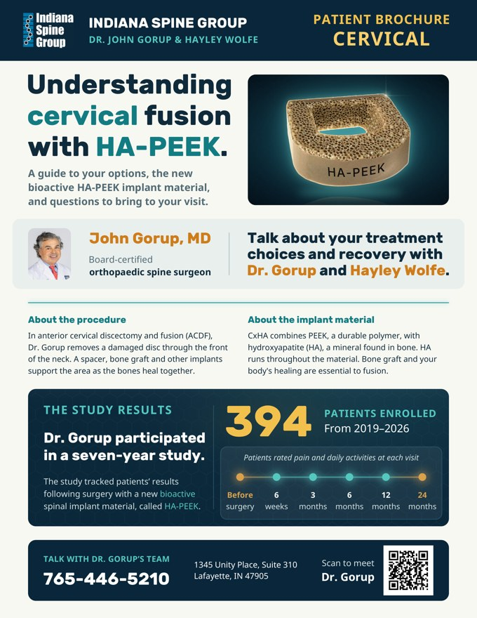
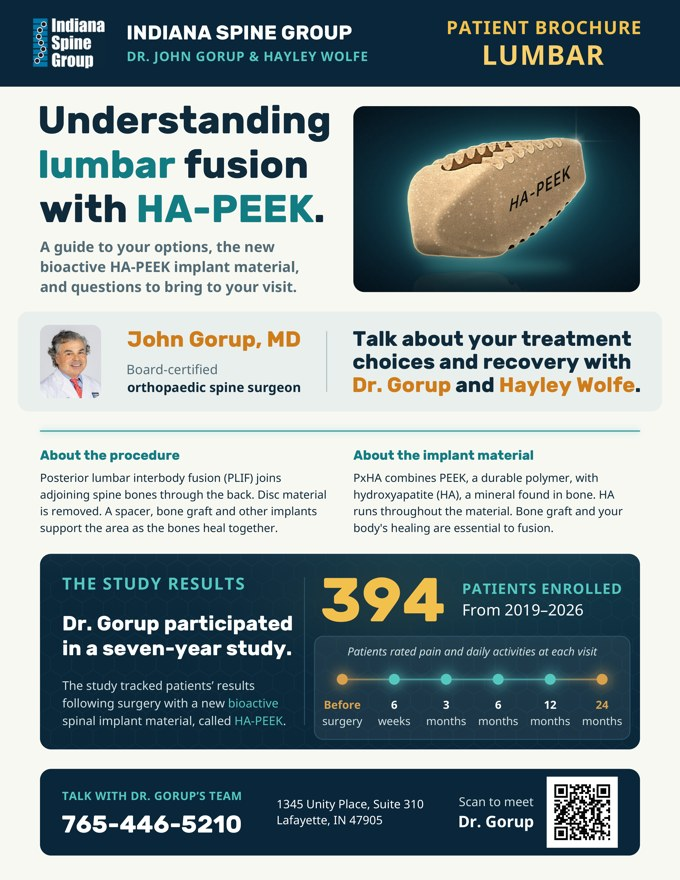

Neck · Cervical
Understanding cervical fusion with HA-PEEK
A guide to your options, the new bioactive HA-PEEK implant material, and questions to bring to your visit.
Open the neck guideIndiana Spine Group · Dr. John Gorup
Guides for patients of Dr. Gorup and Hayley Wolfe.
Choose the guide for the part of your spine being treated. Each one explains the procedure, the HA-PEEK implant material, and what patients reported.

A guide to your options, the new bioactive HA-PEEK implant material, and questions to bring to your visit.
Open the neck guide
A guide to your options, the new bioactive HA-PEEK implant material, and questions to bring to your visit.
Open the lower back guideDr. Gorup participated in a seven-year study. The study tracked patients’ results following surgery with a new bioactive spinal implant material, called HA-PEEK.
Patients rated pain and daily activities at each visit. The results are on page 2 of each guide.
Call Dr. Gorup’s team.
765-446-5210 1345 Unity Place, Suite 310More guides will be added here over time.